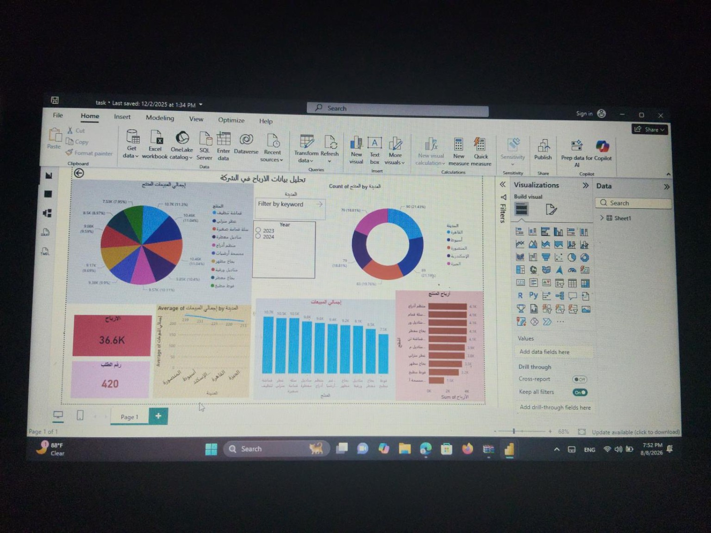

Professional Profile
I specialize in accurate data handling, validation, reporting and information systems within healthcare environments. My experience includes preparing periodic statistical reports, reviewing records, supporting management decisions and coordinating data-entry activities.
I use Microsoft Excel for data organization and reporting and have learned Power BI for data visualization and dashboard reporting. I am seeking Data Coordinator, Reporting, MIS or Healthcare Data Analyst opportunities in Saudi Arabia.
Core Skills
Portfolio Projects
Data Coordinator Reporting Dashboard
Excel · Pivot Tables · Charts
Demonstration project showing how operational records can be organized, summarized and converted into management-ready reports.
Healthcare KPI Dashboard
Power BI
Demonstration dashboard concept for healthcare KPIs, focusing on visualization, filtering and management reporting.
Data Quality Review
Excel
Demonstration workflow for identifying missing values, duplicates, inconsistent entries and validation issues before reporting.

Power BI Sales Dashboard
Interactive dashboard for analyzing sales, products, cities, profits and key performance indicators.
Tools: Power BI, Data Analysis, Data Visualization
Professional Experience
Information Systems Manager
Ministry of Health and Population · 2021–2024
- Managed healthcare information systems and databases.
- Prepared statistical and operational reports.
- Monitored data accuracy and integrity.
- Supervised and trained data-entry staff.
Data Entry Specialist
Ministry of Health and Population · 2017–2021; 2024–Present
- Entered, updated, reviewed and validated healthcare data.
- Reviewed records for completeness and consistency.
- Prepared monthly statistical reports.
- Maintained confidential electronic records.
Education & Training
Bachelor of Medical Science Technology — Information Technology Specialist · 2022
- AI Ambassadors Program — NTI
- Data Collection & Statistics — PFA
- ICDL — Ministry of Health and Population
Sales & Profitability Analysis Dashboard

Tool: Microsoft Power BI
Interactive dashboard analyzing sales, orders, products, cities, average sales and profitability to support management decision-making.
Key analysis: Total Profit · Total Orders · Sales by Product · Profit by Product · Sales by City · Average Sales · Year Filter
Why Hire Me?
- Strong attention to detail and data accuracy.
- 10 years of healthcare data and information-systems experience.
- Advanced Excel and Power BI skills.
- Experienced with confidential healthcare information.
- Based in Egypt and seeking relocation to Saudi Arabia.